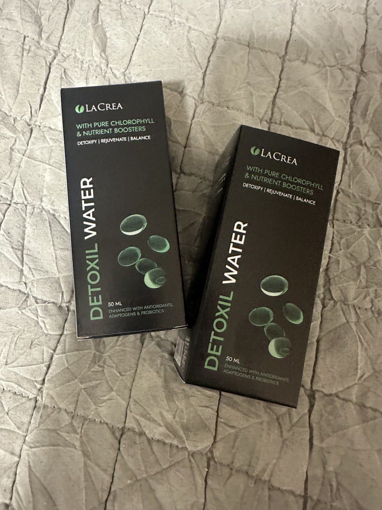

09:04
Шокиращо признание на съдебния лекар: в 9 от 10 трупа има паразити. Паразитите са причина за смъртта в 78 % от случаите! Има начин да се спасите, но всички го пренебрегват! И така, какво може да помогне?
Ексклузивно интервю с най-известния съдебен патолог в страната, доктор на медицинските науки, професор Дамян Гавраилов.
Дамян Гавраилов е съдебен патолог, работи в МБАЛ Св.София и има 40-годишен опит.
Прочетете интервюто с лекаря и научете повече:
- Какви са рисковете от паразитни инфекции и какви са последиците за здравето, ако не се отървем от тях навреме?
- Как можете да се предпазите от неминуема смърт в случай на паразитна инфекция, ако лекарите и препаратите не са ви помогнали?
- Възможно ли е да се отървете от паразитите у дома?
- Какви са най-новите научни постижения в лечението на паразитни инфекции и защо новите препарати не могат да се купят в аптеките?
Журналист: Здравейте, г-н Гавраилов, трябва да призная, че бях шокиран от думите ви. Все още не мога да забравя това, което казахте:
"Хората си мислят, че червеите ще ги изядат, след като умрат, но всъщност те ги изяждат отвътре, докато са още живи.
Дамян Гавраилов: Да, вярно е. Почти в 90% от случаите, когато правя аутопсия, виждам ужасна картина. Труповете са пълни с паразити! И ги виждам не само в стомашно-чревния тракт, както много хора си мислят. Паразитите често живеят в белите дробове, сърцето, черния дроб и дори в мозъка! Колониите им обитават вътрешните органи, а ларвите им се хранят с тъканите на живи хора!
Вчера е извършена аутопсия на 50-годишна жена, починала от сърдечна недостатъчност. Какво общо има това с паразитите? Защото техните отпадни продукти причиняват дисфункция на всички органи, включително и на сърцето. Открих голямо количество паразити в червата ѝ. За съжаление не може да се живее с такива съседи в продължение на много години.
Друг случай: 61-годишен мъж. Той е починал от цироза на черния дроб. Близките му смятат, че причината е алкохолът. Но той не пиеше толкова много и нямаше никакви признаци на алкохолно разрушаване на черния дроб, а черният дроб просто беше изяден от паразити и аз открих стотици проходи, през които са пътували червеите.
Друг случай, който ме шокира. Мозъкът на 49-годишен пациент беше пълен с паразити и техните ларви. Причината за смъртта беше исхемичен инсулт. Но това беше само едно от последствията! Всъщност паразитите просто са се хранили с човешката мозъчна тъкан, изяждайки я жива! През целия си живот пациентът страдал от главоболие, проблеми със съня и паметта. След това, при вече засегнати много области, се прибавила и епилепсията. Шест месеца по-късно той умира.
Друга скорошна история. Пациент умира от рак на дебелото черво, причинен от паразити. Паразитите отравят здравите клетки с токсините си, като ги карат да се регенерират и да променят структурата си. След това те се прераждат в ракови клетки, които са по-агресивни и могат да се противопоставят на паразитите. Но за хората тези клетки са разрушителни. Туморът расте бързо и метастазира. Човекът умира в рамките на няколко месеца.
Паразити, които "преминават" през чревния лумен
Това не е приблизителна, а точна статистика: 78% от "естествените" смъртни случаи са причинени от паразити. В абсолютни стойности те са причинили около 75 000 смъртни случая само през 2023 г.
"Хората умират от паразитни инфекции, тъй като паразитите разрушават органите ви, тровят кръвта ви с токсини, хранят се с мозъчна и белодробна тъкан!
Репортер: Не мога да повярвам! Звучи ужасно.
Дамян Гавраилов: Между другото, знаете ли, че 99,87% от сериозните случаи на вирусни заболявания са свързани с хора, заразени от паразити? Ако те нямаха "гости", щяха да пренасят всичко безсимптомно. Така че това е основната рискова група. Аз и моите колеги виждаме паразитни инфекции почти всеки ден по време на некропсиите на хора, починали от грип или коронавирус. И никой не говори за това, защото веднага ще възникне въпросът: защо имаме толкова много случаи на паразитни инфекции?
Репортер: Защо толкова много хора страдат и умират от паразити?
Дамян Гавраилов: Причината е проста: в нашата страна има заболявания, които изобщо не се лекуват. В нашата страна няма човек, който да се отнася сериозно към проблема с паразитните инфекции. Вярно е, че хората в нашата страна не са най-отговорните. Те отиват на лекар, когато вече е твърде късно. Някой обръща ли внимание на болките в корема, запека, диарията, подуването на корема? Това са първите предупредителни знаци, които не бива да се пренебрегват.
Ето пълен списък на симптомите, които могат да показват, че в тялото ви живеят паразити:
- Лош дъх,
- Петна по тялото,
- Алергия (кожни обриви, конюнктивит, хрема),
- Кожни обриви и зачервяване,
- Чести настинки, възпалено гърло, запушване на носа,
- Хронична умора (уморявате се бързо, независимо от това какво правите),
- Чести главоболия,
- Запек или диария,
- Болки в ставите и мускулите,
- Нервност, проблеми със съня и апетита,
- Черни кръгове, подуване под очите.
Ако имате поне един или два симптома, има 99% вероятност организмът ви да е заразен с паразити. И трябва спешно да се отървете от тях!
Разберете дали имате паразитна инфекция!
На колко години сте?
Вие сте мъж или жена?
Колко често се чувствате уморени?
Страдате ли от безсъние или други проблеми със съня?
Колко често страдате от стомашен и чревен дискомфорт (подуване на корема, оригване, диария, запек)?
Имате ли папиломи по тялото си?
Колко често имате главоболие?
Често ли сте раздразнени, ядосани или нервни?
Боледувате ли често (грип, настинка)?
Забелязвали ли сте лош дъх?
За съжаление вероятността за паразитна инфекция във вашия случай е 92%. Ако не се отървете от паразитната инфекция, вътрешните ви органи може да не са в състояние да издържат на агресивното натоварване, съчетано с действието на химическите компоненти.
Дълги години съм бил съдебен лекар. Виждал съм неща, от които ме побиват тръпки само като си помисля за тях. Хората подценяват рисковете, мислят, че паразитите са червеи, които живеят в червата. Но това не е така. Съществуват огромен брой различни видове паразити. Например, има малки, но изключително токсични паразити. Те отравят организма, навлизат в кръвообращението, в сърцето, отравят го с токсини, предизвикват исхемия, сърдечна недостатъчност, хипертония и в резултат на това инфаркт на миокарда и инсулт. Живеят в белите дробове и черния дроб, проникват в мозъка и дори живеят в очите!
Представители на хелминти, които засягат жизненоважни органи, са Taenia solium, Echinococcus (Echinococcus granulosus), Trichinella (Trichinella spiralis). Ехинококът е ларвният стадий на хелминта от род Echinococcus. Съществуват много видове паразити.
Но лекарите са свикнали да лекуват последствията, а не причината за сърдечните заболявания. Корупцията е широко разпространена в нашата страна. Никой не се занимава сериозно с този проблем. Измамата е навсякъде.
Паразитите причиняват редица опасни заболявания! Всяко от тези заболявания е по същество нелечимо. Всичко това се дължи на факта, че се предписват препарати за симптомите, докато трябва да се лекува причината!
Списъкът на заболяванията, причинени от паразити, никак не е кратък.
Паразитите причиняват :
- появата на папиломи (които често се превръщат в ракови тумори),
- Простатит,
- Некомпетентност,
- Аденом на простатата,
- Цистит,
- Пясък, камъни в бъбреците и пикочния мехур.
Списъкът с женски болести включва следното:
- Болка и възпаление на яйчниците,
- Лепенки,
- Киста,
- Миома,
- Мастопатия,
- Възпаление на надбъбречните жлези, пикочния мехур и бъбреците,
- Преждевременно стареене на кожата, бръчки, торбички под очите, брадавици.
Това е сериозен проблем за всички жени, тъй като ги лишава от силата на привличането.
Репортер: Защо се случва това? Защо проблемът с паразитните инфекции в нашата страна се пренебрегва?
Дамян Гавраилов: Много хора умират от паразитни инфекции. Ние, коронерите, записваме само крайната причина за смъртта и никой не казва, че паразитната инфекция е причина за смъртта, това е недопустимо.
Отговорността не може да се приписва на фармацевтичните компании и техните алчни собственици. Те не желаят да продават истински ефективни противопаразитни препарати в нашата страна и се опитват да ги изпратят в чужбина.
Журналист: Съществуват ли наистина такива препарати? Как хората се предпазват и как можем да спасим живота си?
Дамян Гавраилов: Разбира се, има ефективни препарати. Противопаразитните препарати, продавани в аптеките и предписвани в болниците, играят много важна роля: те вземат пари от джобовете на пациентите и ги вкарват в джобовете на фармацевтичните олигарси.
Да вземем следния пример: пациентът приема хапче, състоянието му изглежда се подобрява. Но паразитите са невероятно устойчиви! Яйцата им имат изключително здрави черупки. И веднага щом действието на препарата спре, те отново се размножават, ларвите им поглъщат тялото отвътре, прониквайки през кръвообращението в сърцето, белите дробове, черния дроб и мозъка. Сърдечният мускул отслабва и се влошава бързо, имунитетът намалява и се появява онкология.
Милиони колонии от паразити нахлуват в цялото тяло и проникват в сърцето, белите дробове, бъбреците, черния дроб и дори в мозъка!
Мозък, заразен с паразити
Много хора вярват, че простото приемане на хапче ще реши проблема. Но това не е така! Едно хапче не е достатъчно, то няма да помогне! А ако постоянно пиете агресивни химически препарати, те ще унищожат организма дори по-бързо от паразитите. Това е един порочен кръг. Но за аптеките е изгодно да ги продават, защото противопаразитните препарати са скъпи. Колкото повече продават, толкова по-богати стават.
Репортер: И така, какво трябва да се направи по този проблем?
Дамян Гавраилов: Какво трябва да направим? Да се борим с корумпираната ни система, да не пречим на предлагането на ефективни препарати в аптеките, да не увеличаваме цените на ефективните препарати, да не ги продаваме в чужбина, ако не са достатъчни за нашата страна!
Самите хора не трябва да бъдат мързеливи и още при първите симптоми на инфекция да предприемат действия, вместо да чакат паразитите да ги убият.
Репортер: Казахте ни, че има ефективен продукт за лечение на паразитни инфекции? Какъв е той?
Дамян Гавраилов: Да, имах предвид Detoxil water. Това е уникален природен продукт и САМО ТОЗИ продукт може да убие всички видове паразити и е напълно безопасен за хората.
Detoxil water е разработка на Институтът по молекулярна биология към БАН. Той получи Европейската награда за пробив в медицината на Международната конференция в Женева и е признат от водещи паразитолози от цял свят.
За разлика от своите аналози, Detoxil water е много мощен препарат, но напълно естествен.
"Detoxil water" предотвратява размножаването на паразитите. Като се натрупват в телата им, активните вещества нарушават процеса на образуване на яйца и яйцеснасяне при червеите. При протозоидните паразити те потискат процеса на клетъчно делене. Лишени от репродуктивната си функция, паразитите умират бързо. Като стимулират и възстановяват перисталтиката, активните съставки в състава ежедневно елиминират яйцата на паразитите от червата, предотвратявайки тяхното съзряване до пълното им изчезване. Освен това пречиства кръвта, лимфата и междуклетъчното пространство от токсичните продукти на паразитите, предотвратявайки разпространението на човешкия папиломен вирус.
Програма за приемане на Detoxil water не само напълно елиминира паразитите, но също така подобрява чревната микрофлора, укрепва имунитета и възстановява тялото след отравяне.
За първи път чух за Detoxil water от мой стар приятел, който сега е академик и е ръководител на отдела по паразитология в Института по молекулярна биология.
Прекарах няколко години в търсене на противопаразитен препарат, който ефективно да се справи с проблема, без да навреди дори на отслабен организъм. Панайот Белчев ми разказа за откритието в неговия център. По това време Detoxil water вече беше в заключителен етап на разработка и показваше много добри резултати. А той беше точно това, от което имах нужда!
Бележка на редактора: След интервю с водещ криминалист се свързахме с Панайот Белчев, който се съгласи да коментира статията и самия продукт.
Панайот Белчев
Паразитолог с 36-годишен опит, академик, ръководител на отдела
по паразитология в Центъра по молекулярна биология.
ПАРАЗИТИТЕ УБИВАТ ТЯЛОТО ВИ ОТВЪТРЕ.
Паразитната инфекция отравя тялото ви ден след ден, като разрушава един след друг жизненоважни органи. Тъжният краен резултат е смъртта. Вероятно нямате представа колко хора умират всяка година от паразити. А по-лошото е, че не всички лекари знаят за това!
Когато Дамян дойде при мен за съвет как да помогне на няколко от пациентите си в болницата, които преди него са били лекувани от всичко друго, освен от паразити, най-накрая разбрах състоянието на здравната ни система. Но това не беше нищо ново за мен. Посъветвах го да опита разработката на нашия център, която помага дори на най-тежките случаи.

Detoxil water са капки за борба с паразитни инфекции, които се състоят изключително от естествени съставки. Активните съставки бързо блокират способността на паразитите да се размножават и след това убиват не само паразитите, но и техните яйца. Освен това те напълно почистват организма от мъртвите паразити и всички следи от жизнената им дейност. Този резултат е уникален и е постигнат само от нашия изследователски център!
Detoxil water се предлага в лесна за приемане форма (капки). Само за 4 до 5 седмици употреба той елиминира всички паразити и последиците от разрушителното им въздействие върху организма. Препаратът е напълно безопасен и няма странични ефекти. Той може да се използва не само за борба с паразитите, но и като превантивна мярка.
Изглежда, че след това изявление аптеките ще трябва да се наредят на опашка за правото да продават Detoxil water. Правителството ще трябва да се справи по някакъв начин. Но то не го е направило. Само мълчание. Сякаш никой не е забелязал откритието.
Резултати от клинични изпитвания на Detoxil water. 1250 участници: София, Пловдив, Бургас.
|
100 % |
Прочистване на паразитни инвазии |
|
100 % |
Нормализиране на храносмилателната система |
|
80 % |
Нормализиране на нивата на кръвната захар |
|
75 % |
Подобряване на общите здравословни показатели |
|
70 % |
Няма рецидиви след лечение с Detoxil water |
Повечето обикновени хора никога не са чували за Detoxil water. А лекарите, особено в регионите, не винаги са наясно с тези нови разработки. Това е тъжна ситуация. Но певци, артисти, водещи, политици - накратко, известни хора - отдавна знаят за Detoxil water и го приемат редовно.
Николай Вълчев:
"Когато бях малък, се заразих с паразити, като ядох сурова риба. Имах този период, когато живеех в Китай, където е нормално да се яде сурова риба. Никога няма да забравя колко много страдах, едва ме спасиха, наложи се да ме оперират... Ще помня симптомите до края на живота си. Затова, щом разбрах, че нежеланите гости отново са се настанили в тялото ми, веднага започнах да търся нещо, с което да се отърва от тях. Трябваше да намеря нещо безопасно - все пак възрастта ми не е време да рискувам. За щастие, открих Detoxil water. Той не само ми помогна да се отърва от паразитите, но и напълно възстанови организма ми. Върнах се към нормалния си живот и към любимата си работа.
Румяна Костова:
"Преди няколко години започнаха сериозни здравословни проблеми, постоянни болки в стомаха, алергия и главоболие постоянно ме измъчваха. Започнах да качвам килограми, въпреки диетите, на които се подлагах. Фигурата е изключително важна за една звезда от шоубизнеса! Оказа се, че това са паразити. Всички системи на тялото ми не функционираха правилно заради отравянето! Имах късмета да се свържа с Дамян Гавраилов. Той ми разказа за Detoxil water. Тези капки ми помогнаха не само да прочистя тялото си, но и да възстановя всички органи, да се отърва от алергията и дори да си върна красивата фигура !
Благодарение на тези хора Detoxil water става все по-известен на обикновените хора. Те ми пишат въпроси за капките и тяхното действие, а след това ми изпращат писма за опита си от употребата на препарата.
Трайко Антонов, 49 години, Силистра
Detoxil water спаси живота ми. Буквално.
Не разбирам защо такъв мощен, ефективен и безопасен препарат не се продава в аптеките! И ЗАЩО ЛЕКАРИТЕ ПРОДЪЛЖАВАТ ДА ИЗПОЛЗВАТ БЕЗПОЛЕЗНИ ПРЕПАРАТИ!
Бях в лошо състояние заради паразитите. Много пъти ме караха на линейка, но едва след многото изследвания, които ми направиха, разбраха, че причината са паразитите. Те се бяха разпространили по цялото ми тяло! Брадавици по цялото ми тяло, сериозни усложнения.
Основният проблем беше, че органите ми започнаха да се износват. Черният дроб и червата бяха в много лошо състояние. Ставите, кожата и лигавиците ми също бяха засегнати и започнаха да се появяват спазми поради лошото кръвообращение. Но аз още не съм стар, казах си, все още искам да живея пълноценно!
Лекарите ми предписваха хапчета, но те не помагаха особено. Вече не излизах, не пътувах, не исках да се виждам с приятелите си. Животът ми се превърна в истински кошмар. Само тези, които имат същия проблем, могат да разберат това!
Веднага след като започнах да приемам Detoxil water, паразитите започнаха да напускат тялото ми. Дори не искам да ви казвам колко гадости излязоха, но се радвам, че се отървах от тях. Сега осъзнавам колко опасно е да се приемат химически препарати, един ден си помислих, че ще умра в линейката...
Чудесно е, че вече можем да използваме естествения състав на Detoxil water! Изпробвах ефективността му върху себе си и сега вярвам в силата на растенията. Тестовете показват, че вече няма никаква инфекция, органите ми са се върнали към нормалното си състояние и изглеждам и се чувствам по-млад. Днес никой не може да каже, че съм почти на 50 години!
Но за съжаление получавам и други тъжни истории, които ме карат да настръхвам. Една жена на около четиридесет години ми писа, че е ходила в Япония, където също е яла различни видове сурова риба.
Тя ми описа ситуацията си и аз веднага разбрах, че положението ѝ е много сериозно и изисква незабавни действия. Препоръчах ѝ да курс лечение с Detoxil water, за да се прочисти напълно и да премахне паразитите. Близките ѝ обаче започнаха да я разубеждават да се лекува, като ѝ препоръчваха препарати от аптеките, тъй като "Detoxil water" все още не беше пуснат в продажба.
Само по чудо е оцеляла.
След като прекара 2 седмици в интензивното отделение и почти месец в болницата, тя ми изпрати снимка от операцията, която лекарите извършиха по нейна молба. Както се казва, без коментар...
Журналист: Това звучи наистина ужасно. И от това, което разбрах, не отнема много време, за да се прочисти напълно тялото с това ново средство, нали?
Дамян Гавраилов: Точно така, Detoxil water пречиства организма доста бързо:
1 седмица
Благодарение на намаляването на токсичните ефекти на паразитите, умората и апатията изчезват, а храносмилането и апетитът се връщат към нормалното си състояние. Още от първата седмица на лечението ще забележите подобрение на настроението и работоспособността си.
Седмици 2-3
Благодарение на благоприятното въздействие на растителните екстракти имунната ви система ще бъде подсилена, а алергичните реакции и други здравословни проблеми ще намалеят.
Седмица 4-5
След като токсичното въздействие на паразитите върху организма бъде преустановено, ще забележите както външно подобрение на тялото, така и дори подмладяване на кожата. Кожните обриви, включително папиломите, започват да изчезват.
Седмица 6-7
Храносмилателната система и всички вътрешни процеси ще се нормализират, наднорменото тегло ще изчезне, кръвното налягане ще се нормализира, а сърцето ще заработи като по часовник. След пълната програма за лечение много хора забелязват, че здравословните проблеми, които са ги тормозили в продължение на много години, са изчезнали. Ще удължите живота си с 10 до 15 години!
Отървете се от 7 болести за 7 седмици!
Репортер: Как ще се подобри състоянието на пациента след програмата за почистване "Detoxil water"?
Дамян Гавраилов: Здравословното състояние на хората, които ще преминат през програмата за лечение с Detoxil water, ще се промени значително! В крайна сметка паразитите имат вредно въздействие върху целия организъм. А след лечението много хора казват, че се чувстват така, сякаш са се преродили.
Този феномен е подобен на "ефекта на пеперудата", при който размахването на крилото на пеперуда предизвиква верижна реакция от промени в природата. Капките действат по същия начин: те предизвикват верижна реакция от положителни промени в организма. След като се справи с един сериозен проблем, тялото се освобождава от друг, трети и т.н.
1. Кръвното налягане се нормализира
Първо, сърцето и кръвоносните съдове са напълно обновени. 7 седмици редовен прием на Detoxil water напълно прочиства съдовата система. С други думи, съдовете са възстановени и "поглъщат" безпроблемно колебанията в кръвното налягане. Съдовете поддържат стабилно кръвно налягане от 120 до 80.
2. Подобрен приток на кръв към мозъка
След един курс на прием на Detoxil water кръвта се прочиства със 73%; подобрява се кръвообращението в мозъка.
Пациентите с удоволствие отбелязват, че:
- Паметта се подобрява,
- Сънят се нормализира, а летаргията и слабостта изчезват,
- Шумът в ушите изчезва,
- Главоболието вече не ме притеснява.
3. Роговицата и ретината се възстановяват и зрението се подобрява.
"Detoxil water" елиминира паразитните токсини не само в големите съдове и артерии, но и в малките капиляри. Те са особено многобройни в очите. Резултатът е обновяване на клетките на ретината и подобряване на мускулния тонус в очите.
- Зрителната острота се подобрява с 0,5 до 2,1 точки,
- Очното налягане се нормализира,
- Симптомите на катаракта се намаляват.
4. Подуването изчезва
Възстановява добрата функция на бъбреците и обмяната на веществата. Бъбреците спират да задържат вода и диуретиците вече не са необходими.
- Край на възпалените и подути крака,
- Коремът се свива, тъй като органите се подуват по-малко,
- Течността в белите дробове изчезва и дишането става по-лесно.
5. Стомахът и червата ви ще започнат да функционират нормално.
След като организмът се освободи от паразитите, функцията на цялата храносмилателна система се възстановява. Метаболитните процеси се нормализират, храната се усвоява лесно, а процесът на храносмилане е плавен и комфортен.
- Подуването на корема, увеличеното образуване на газове и оригването вече не са проблем,
- Вече няма да ви притесняват диария и запек
- Храносмилането се нормализира и лошият дъх изчезва,
- Симптомите на гастрит, язва, киселини и киселини намаляват или изчезват напълно.
6. Сърцето е възстановено
Елиминирането на паразитите има положителен ефект върху тонуса на сърдечния мускул. В 93 % от случаите тахикардията изчезва, а в 99 % от случаите се лекува исхемия.
- Сърдечната честота и пулсът се нормализират,
- Болките в сърцето изчезват,
- Рискът от сърдечен удар намалява.
7. Състоянието на кожата се подобрява
Състоянието на вътрешните органи оказва пряко влияние върху външния вид на кожата. Когато вътрешните органи функционират правилно, кожата е гладка, здрава и без петна и проблеми.
- Папиломите и брадавиците изчезват,
- Кожата става по-чиста, хидратирана и бръчките се изглаждат,
- Кожните обриви и акнето изчезват, а кожата изглежда по-свежа.
8. Имунната система започва да функционира правилно и се предпазва от рак!
Имунитетът се формира в червата. Паразитите отслабват значително имунната система на организма. Имунитетът не е само защита срещу вируси. Основната функция на силната имунна система е да предпазва от ракови клетки. Силната имунна система разпознава и бързо унищожава раковите клетки. Тя предотвратява растежа на туморите.
Имунната система, която функционира в поне 75%, вече е непреодолима бариера срещу вирусите. И това е също толкова важно днес!
Отървете се от паразитите и удължете живота си с 15 до 18 години!
Репортер: Казахте, че Detoxil water не се предлага в аптеките. Тогава къде можем да го получим?
Дамян Гавраилов: Всички български граждани могат да поръчат "Detoxil water" по интернет, директно от производителя, и да се възползват от специална оферта.
Репортер: Защо можем да намерим този препарат само в интернет?
Дамян Гавраилов: Това беше направено по три причини:
- "Detoxil water" се доставя директно от производителя до клиента.
- Защита от посредници. Така че никой да не може да спечели 10-20-30 хиляди лева от препродажба.
- Бърза доставка.
Отстъпка от производителя!
Дамян Гавраилов: Програмата на Българския социален фонд вече е в ход. В рамките на тази програма можете да поръчате Detoxil water с отстъпка до 50%.
Програмата е насочена главно към хора над 45-годишна възраст, живеещи в райони с по-тежка епидемиологична обстановка:
Затова препоръчвам на хората, да не губят време! Друг шанс няма да има. Не знаем колко дълго ще продължи програмата и кога ще свършат запасите на Detoxil water.
Поръчайте Detoxil water сега!
За да получите отстъпка до 50% при закупуване на Detoxil water, познайте вратата, зад която е отстъпката от 50%.
Офертата е валидна до (включително). След изтичане на срока на валидност на офертата продуктът ще се предлага само на пълна цена 138 Лв. за опаковка.
ВНИМАНИЕ: Докато офертата е валидна, можете да поръчате "Detoxil water" с отстъпка до 50%. Познайте коя врата крие 50% отстъпка, след което попълнете формуляра за поръчка по-долу до Броят на опаковките с отстъпка е ограничен.
Специално за нашите читатели публикуваме офертата на производителя на Detoxil water.
Условия за участие в офертата:
-
Трябва да сте български гражданин на възраст над 18
години.
Продуктът с отстъпка е достъпен само за пълнолетни граждани на България. -
Възможно е да го закупите само за лична употреба.
Целта е да се противодейства на случаите на препродажба. -
Само чрез официалната томбола.
Поради ограниченото количество на продукта, той се продава чрез официалната томбола, която ще намерите в долната част на страницата.
ПАЗЕТЕ СЕ ОТ ФАЛШИФИКАТИ! Detoxil water ORIGINAL се продава САМО НА ОФИЦИАЛНИЯ САЙТ!
Важно: След много изследвания учените стигнаха до заключението, че това е най-добрият период за започване на програмата за изтегляне на Detoxil water. Тъй като средната температура се стабилизира, метаболизмът се ускорява, кръвообращението в тялото се подобрява, притокът на кръв и кислород към вътрешните органи се увеличава и ефектът на продукта се увеличава. Организмът се освобождава от паразитите 78% по-бързо, отколкото през други периоди на годината.
Вземете участие в томболата и получете отстъпка до 50 % при покупка на Detoxil water.
Познайте зад коя врата се крие 50% отстъпка
Побързайте! Отстъпката е валидна за ограничен период от време:
Коментари:
Потребителят пише съобщение...

ДА СЕ ОТЪРВЕТЕ ОТ ВРЕДИТЕЛИТЕ
Всички права запазени.